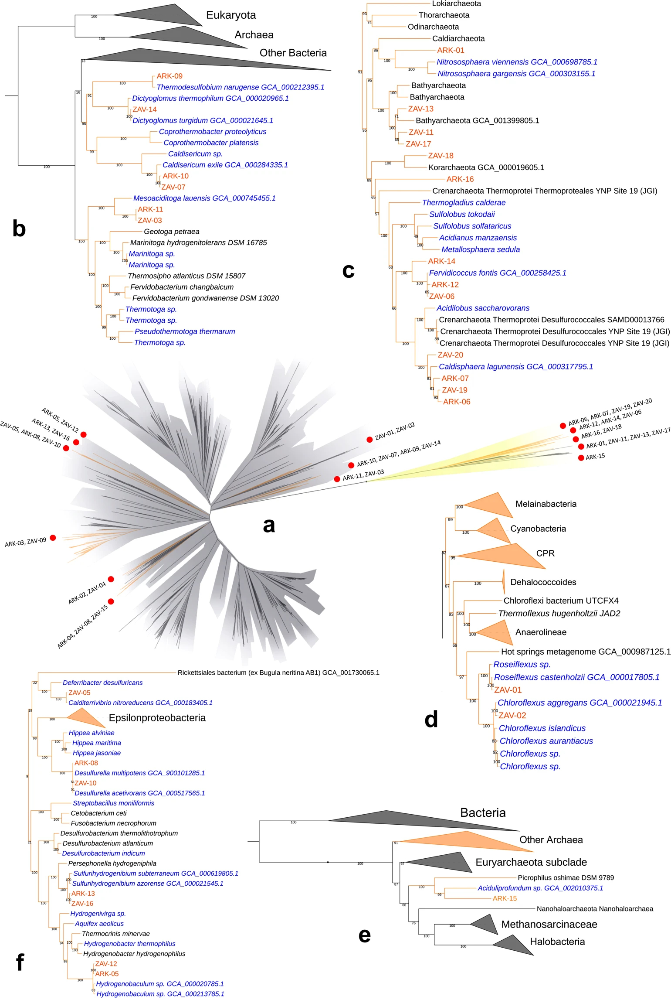

		<!-- Main -->
			<article id="main">
					
				<!-- One -->
					<section class="wrapper style4 container">
					
						<!-- Content -->
							<div class="content">
								<section>
										<header>
										<h3><strong>Miscellaneous projects
</strong></h3> </header>

<p>A place for all the projects that don't merit their own page (yet). Currently these include (1) metagenomic data from hot springs in Kamchatka, Russia, (2) metagenomic data from aquariums, and (3) genomics of plant-associated bacteria. 
	 </p>


<div class="row">

	<div class="8u">
		<br>
		<br>
		<a class="image featured special">
		<p>Phylogenetic placement of the MAGs into the tree of life. </p>
		</a>
	</div>

<div class="4u">

<header> <h4><strong>(1) Metagenomic data from two thermal pools in Kamchatka, Russia</strong></h4></header>
<p>This project was a collaboration with <a href="https://www.ecoevoint.ch/">Dr. Laetitia Wilkins</a>. Together we assembled draft metagenome-assembled genomes (MAGs)  from two hot springs located in the Kamchatka peninsula in Russia. We recovered 36 total MAGs including members that were taxonomically assigned to groups previously underrepresented in available genome data. This included several archaea (Korarchaeota, Bathyarchaeota and Aciduliprofundum) and one potentially new species within the bacterial genus Sulfurihydrogenibium. </p>


</div>

</div>
		<p>
<b>Related publications:</b>
<ul class="default">
<li><b>Ettinger CL*</b>, Wilkins LGE*, Jospin G & Eisen JA. 2019. Metagenome-assembled genomes provide new insight into the microbial diversity of two thermal pools in Kamchatka, Russia. Scientific Reports. DOI: <a href=https://www.nature.com/articles/s41598-019-39576-6>10.1038/s41598-019-39576-6</a> *co-first authors</li>		
</ul>	
</p>

<header> <h4><strong>(2) Metagenomic data from aquariums</strong></h4></header>
<p>Previously, members of the Eisen lab sampled aquaria as part of an undergraduate research project that investigated microbial community assembly in the fall of 2012. As part of that work, metagenomes were generated from various aquaria. Later, using these metagenomes we were able to recover 11 MAGs reconstructed from freshwater and saltwater aquaria, including representatives of Polynucleobacter, Anaerolinea, Roseobacter, Flavobacteriia, Octadecabacter, Mycobacterium, and Candidate Phyla Radiation (CPR) members. </p>

		<p>
<b>Related publications:</b>
<ul class="default">
	
<li><b>Ettinger CL</b>, Bryan J*, Tokajian S, Jospin G, Coil D & Eisen JA. 2021. Reconstruction of metagenome-assembled genomes from aquaria. Microbial Resource Announcements. DOI:<a href="https://journals.asm.org/doi/10.1128/MRA.00557-21"> 10.1128/MRA.00557-21</a> *undergraduate author </li>

</ul>	
</p>

<p>
	
	<header> <h4><strong>(3) Genomics of plant-associated bacteria </strong></h4></header>
	<p>I have been involved in several projects focused on the genomics of plant-associated bacteria. These projects involved genomic assembly and annotation of bacterial isolates, which were then used as resources for papers focused on molecular assessment of these bacteria.  </p>

		<p>
<b>Related publications:</b>
<ul class="default">
	
	<li> Shehata HR, <b>Ettinger CL</b>, Eisen JA, & Raizada MN. 2016. Genes Required for the Anti-fungal Activity of a Bacterial Endophyte Isolated from a Corn Landrace Grown Continuously by Subsistence Farmers Since 1000 BC. Frontiers in Microbiology. DOI: <a href="https://doi.org/10.3389/fmicb.2016.01548">10.3389/fmicb.2016.01548 </a></li>

	<li>Mousa WK, Shearer, C, Limay-Rios, V, <b>Ettinger CL</b>, Eisen JA & Raizada MN. 2016. Root-hair endophyte stacking in finger millet creates a physicochemical barrier to trap the fungal pathogen Fusarium graminearum. Nature Microbiology. DOI:<a href="https://www.nature.com/articles/nmicrobiol2016167"> 10.1038/nmicrobiol.2016.167 </a></li>

	<li><b>Ettinger CL</b>, Mousa WM, Raizada MN, Eisen JA. 2015. Draft genome sequence of Enterobacter sp. strain UCD-UG_FMILLET (phylum Proteobacteria). Genome Announcements. DOI: <a href="https://doi.org/10.1128/genomeA.01461-14">10.1128/genomeA.01461-14 </a></li>

	<li><b>Ettinger CL</b>, Shehata HR, Johnston-Monje D, Raizada MN, Eisen JA. 2015. Draft genome sequence of Burkholderia gladioli strain UCD-UG_CHAPALOTE (phylum Proteobacteria). Genome Announcements. DOI: <a href="https://doi.org/10.1128/genomeA.01462-14"> 10.1128/genomeA.01462-14 </a> </li>
	
	
</ul>	
</p>


												
									
								
							
								</section>
							</div>

					</section>
					
					
					
					
						
										
								
					
			</article>
